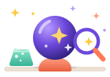

테스트 모아보기
나는 어떤 설기일까?
요즘 화제인 피자설기, 설기를 고르고 즐기는 태도로 알아보는 유형 테스트
나는 어떤 네컷 포즈일까?
네컷사진 찍는 습관으로 알아보는 포즈 유형 테스트
나는 어떤 두쫀쿠일까?
요즘 핫한 쫀득 초콜릿 쿠키 취향 테스트
나는 어떤 반려동물 상일까?
돌보고 함께하는 방식으로 알아보는 반려동물 유형 테스트
나는 어떤 카페 음료일까?
메뉴 고르는 습관으로 알아보는 음료 유형 테스트
나는 어떤 비빔밥일까?
제철 나물이 화제인 그 한 그릇, 재료를 고르고 비비는 방식으로 알아보는 유형 테스트
나는 어떤 식물일까?
식물을 키우는 방식으로 알아보는 나를 닮은 식물 테스트
나는 어떤 고양이일까?
고양이가 된 나를 상상하며 알아보는 나를 닮은 고양이 테스트
내 이상형은 어떤 상일까?
끌리는 사람의 모습으로 알아보는 이상형 동물상 테스트
나는 어떤 답장일까?
메신저를 대하는 태도로 알아보는 나의 답장 유형 테스트
나는 어떤 조원일까?
조별과제를 대하는 태도로 알아보는 나의 역할 유형 테스트
나는 어떤 가방 속 물건일까?
가방을 싸고 정리하는 습관으로 알아보는 나를 닮은 물건 테스트
나는 어떤 알람일까?
아침에 일어나는 습관으로 알아보는 나의 알람 유형 테스트
나는 어떤 마라탕 토핑일까?
재료를 고르는 습관으로 알아보는 나의 마라탕 토핑 유형 테스트
나는 어떤 덕질러일까?
좋아하는 마음을 표현하는 습관으로 알아보는 나의 덕질 유형 테스트
나는 어떤 겨울 간식일까?
간식을 고르고 나누는 방식으로 알아보는 나의 겨울 간식 유형 테스트
나는 어떤 여행 코스일까?
여행을 계획하고 다니는 방식으로 알아보는 나의 여행 코스 유형 테스트
나는 어떤 주말일까?
쉬는 날을 보내는 방식으로 알아보는 나의 주말 유형 테스트
나는 어떤 장바구니일까?
물건을 담고 고르는 습관으로 알아보는 나의 장바구니 유형 테스트
나는 어떤 방일까?
내 방을 꾸미고 쓰는 습관으로 알아보는 나의 방 유형 테스트

무슨상연구소는 어떤 곳인가요?
무슨상연구소는 요즘 화제가 되는 음식, 취미, 일상 소재를 주제로 몇 가지 질문에 답하면 나와 닮은 유형을 알려주는 유형 테스트 모음이에요. 각 테스트는 16개의 질문과 16가지 결과로 이루어져 있고, 1분 안팎이면 결과를 확인할 수 있어요. 결과는 이름과 한 줄 요약, 설명, 특징, 잘 맞는 궁합으로 보여드리며 친구에게 링크나 이미지 카드로 공유할 수도 있어요.
이런 소재를 재미있게 풀어요
두쫀쿠, 카페 음료, 피자설기, 마라탕 토핑처럼 요즘 화제인 음식부터 알람, 주말, 가방 속 물건 같은 일상, 반려동물·식물·고양이 같은 취미까지 소재를 계속 넓히고 있어요. 소재는 달라도 모두 "나는 어떤 ○○일까?"라는 같은 질문에서 시작해요.
테스트는 이렇게 만들어져요
각 테스트는 소재 안에서 실제로 겪는 장면을 16개의 질문으로 만들어요. 카페 음료 테스트는 새로 생긴 카페를 발견했을 때나 주문이 잘못 나왔을 때를, 알람 테스트는 알람이 울려서 눈을 뜬 첫 순간을 묻는 식이에요. 질문마다 두 가지 중 하나를 고르면 사람과 어울리는 방식, 정보를 받아들이는 방식, 판단하는 기준, 생활 방식이라는 네 가지 기준으로 답이 모여 16가지 결과 중 하나가 정해져요. 더 자세한 기준은 무슨상연구소 테스트는 이렇게 설계해요 — 16문항·16결과를 만드는 다섯 가지 원칙 글에 정리해 두었어요.
결과는 이렇게 보여드려요
결과에는 소재에 어울리는 이름과 이모지, 한 줄 요약, 설명, 특징 세 가지, 그리고 잘 맞는 궁합이 담겨요. 궁합은 비슷한 결과가 아니라 서로 부족한 부분을 채워 주는 반대 성향의 결과로 골랐어요. 친구와 결과를 비교하며 "우리는 어디가 다를까?" 하고 이야기해 보세요.
이런 분께 추천해요
- 친구와 결과를 비교하며 이야기 나누는 걸 좋아하는 분
- 1분 안팎으로 가볍게 즐길 거리를 찾는 분
- 요즘 화제인 소재로 나를 표현해 보고 싶은 분
- 결과 카드를 SNS나 메신저로 공유하고 싶은 분
무슨상연구소가 지키는 것
- 재미로 즐기는 콘텐츠예요. 심리검사나 진단을 대신하지 않아요.
- 결과에 좋고 나쁨을 두지 않아요. 결과 모두 나름의 매력으로 만들었어요.
- 가입 없이 이용해요. 답변과 결과는 서버에 저장하지 않아요. 자세한 내용은 개인정보처리방침에서 확인할 수 있어요.
- 특정 브랜드나 인물의 이름을 앞세우지 않아요. 누구나 아는 일반적인 표현으로 만들어요.
테스트가 만들어진 과정과 결과 짝 이야기는 읽을거리에서 볼 수 있어요.
이렇게 이용하세요
- 1
마음에 드는 테스트를 골라 시작 버튼을 눌러요. 테스트가 많다면 목록 위 검색창에 소재나 결과 이름, 초성(예: ㅁㄹㅌ)을 넣어 찾을 수 있어요.
- 2
각 질문에서 두 가지 중 평소의 나와 더 가까운 쪽을 골라요. 정답은 없으니 먼저 떠오르는 쪽을 고르면 되고, 16개 질문에 1분 안팎이 걸려요.
- 3
결과가 나오면 이름·한 줄 요약·설명·특징·잘 맞는 궁합을 확인하고, '이미지로 저장'이나 '링크 공유하기'로 친구와 나눠 보세요.
닉네임을 넣으면 이렇게 달라져요
시작 화면에서 닉네임을 입력하면 결과 화면과 저장하는 이미지 카드, 공유 링크에 함께 나와요. 다음에 다시 입력하지 않아도 되도록 내 기기의 브라우저에만 기억되고 서버로 보내지 않아요. 다만 링크로 공유하면 닉네임도 링크에 담기니, 넣고 싶지 않다면 비워 두세요.
친구가 내 링크를 열면
링크를 받은 친구는 질문에 답하지 않고도 내 결과를 바로 볼 수 있어요. 결과 아래의 '나도 테스트 하러가기' 버튼을 누르면 같은 테스트를 직접 해 볼 수도 있어요.
더 재미있게 즐기는 방법
- 친구와 같은 테스트를 하고 결과를 비교해 보세요. 서로의 궁합 결과가 나오면 더 재미있어요.
- 소재가 다른 테스트를 몇 개 해 보세요. 장면이 달라서 결과가 달라지는 것도 자연스러워요.
- 기분이나 상황이 다를 때 다시 해 보세요. 결과가 바뀌었다면 그게 그날의 나예요.
- 결과 설명에서 "맞아, 나 이래!" 싶은 문장 하나만 찾아도 충분해요.
자주 묻는 질문
무료인가요? 회원가입이 필요한가요?
모든 테스트는 무료이고 회원가입이나 로그인 없이 바로 이용할 수 있어요. 앱을 설치할 필요도 없이 스마트폰과 PC의 웹 브라우저에서 바로 열려요.
결과가 실제 성격과 똑같나요?
재미로 즐기는 콘텐츠예요. 일상 속 선택 장면을 바탕으로 성향을 가볍게 유형화한 것이라 심리검사나 진단을 대신하지 않아요. 결과 이름은 나의 여러 면 중 한 부분을 재미있게 빗댄 표현이에요.
내 답변이 저장되나요?
답변과 결과는 서버에 저장되지 않고 이용자의 브라우저 안에서만 처리돼요. 자세한 내용은 개인정보처리방침을 확인해 주세요.
테스트 하나에 얼마나 걸리나요?
16개의 질문에 두 가지 중 하나를 고르는 방식이라 1분 안팎이면 끝나요. 오래 고민하지 말고 먼저 떠오르는 쪽을 고르면 돼요.
닉네임은 꼭 입력해야 하나요?
아니에요. 입력하지 않아도 모든 기능을 쓸 수 있어요. 입력하면 결과 화면과 이미지 카드, 공유 링크에 함께 나오고, 다음에 다시 입력하지 않도록 내 기기의 브라우저에만 기억돼요.
결과는 어떻게 공유하나요?
결과 화면에서 '이미지로 저장'을 누르면 결과 카드를 이미지로 저장하거나 공유할 수 있고, '링크 공유하기'를 누르면 링크를 보낼 수 있어요. 기기에 따라 공유 창이 열리거나 링크가 복사돼요.
친구가 내 링크를 열면 어떻게 보이나요?
링크를 받은 친구는 질문에 답하지 않고도 내 결과를 바로 볼 수 있어요. 결과 아래의 '나도 테스트 하러가기'를 누르면 같은 테스트를 직접 해 볼 수 있어요.
다시 해도 같은 결과가 나오나요?
'다시 테스트하기'로 언제든 다시 할 수 있어요. 같은 사람도 기분과 상황에 따라 다르게 고를 수 있어서 결과가 달라질 수 있고, 소재가 다른 테스트에서는 다른 유형이 나오는 것도 자연스러워요.
좋은 결과와 나쁜 결과가 따로 있나요?
없어요. 결과 모두 나름의 매력을 담아 만들었고, 어떤 결과가 나와도 좋고 나쁨이 없어요. 서로 반대인 결과끼리 잘 맞는 짝이 되도록 궁합을 정했어요.
테스트를 검색할 수 있나요?
네. '테스트 모아보기' 위의 검색창에 소재나 결과 이름을 넣으면 걸러서 보여줘요. 예를 들어 '아침'이나 '아메리카노'를 넣거나, 초성(ㅁㄹㅌ)만 넣어도 찾을 수 있어요.
광고가 나오나요?
운영을 위해 광고가 표시될 수 있어요. 광고와 쿠키에 관한 내용은 개인정보처리방침의 '광고 및 쿠키' 항목에서 확인할 수 있어요.